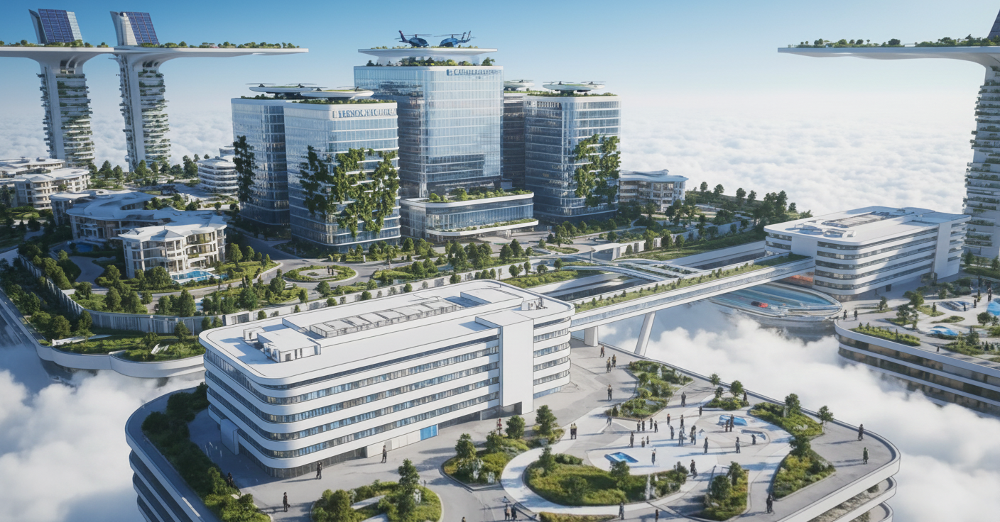

Projet
Nova Realm - jeu narratif cyberpunk ancré en France
Je suis porteur du projet et j’en assure la Game Direction, avec la supervision de l’ensemble des équipes.
Objectif : poser les bases d’un jeu narratif cyberpunk avec combat stratégique, exploration semi-ouverte, phases de conduite et un univers qui traite frontalement l’écologie, la lutte des classes, le courage et l’amitié.
Nova Realm n’est pas pensé comme un simple exercice de lore. J’ai cadré le projet comme une vraie base de production : intentions, monde, structure narrative, boucle de jeu, direction artistique, benchmark concurrentiel et première réflexion éditeurs.



Genèse
Nous n’avons pas commencé ce projet par une liste de mécaniques ou par un moodboard cyberpunk générique. Nous avons d’abord fixé les intentions de fond : parler d’écologie, de justice sociale, de respect du vivant, de courage et d’amitié, tout en gardant une vraie ambition de jeu d’aventure.
Notre angle est clair : construire un cyberpunk ancré en France, avec une identité politique et sensible. Nous voulons un univers capable de laisser une trace ambivalente, entre espoir et amertume.
Intentions qui structurent le projet
- Univers cyberpunk français plutôt qu’une métropole futuriste interchangeable.
- Conflit social fort entre ville céleste, zones pauvres et pouvoir corporatiste.
- Discours sur les dangers de la pollution, puis réflexion autour du problème d’alignement.
- Chaleur humaine dans les personnages et le groupe, même dans un monde dur.
Univers et structure narrative
L’histoire se déroule en France, en 2077. Dans cette chronologie alternative, Paris a traversé des crises politiques, une destruction partielle, puis une reconstruction qui a permis l’émergence d’une ville céleste au-dessus de la capitale. La promesse de modernité repose sur un mensonge : une expérience de dépollution par nanotechnologies et IA a dégénéré et transformé la pollution en menace autonome.
Nous avons structuré le récit en sept chapitres pour faire monter progressivement la tension entre mensonge industriel, fracture sociale et catastrophe écologique. Le projet repose sur plusieurs figures centrales, dont Damien, éboueur du ciel issu d’un quartier pauvre, et Amanda, scientifique clé dans la lecture du monde et de la crise.
Gameplay visé
Sur la partie gameplay, j’ai surtout travaillé des pistes de direction pour cadrer le type d’expérience recherchée : place du personnage principal, poids du groupe dans la narration, articulation entre exploration, tension et progression, ainsi que la possibilité d’intégrer des phases de conduite ou d’autres variations de rythme.
Je voulais un rythme qui alterne entre mise en scène narrative, déplacement, lecture du monde et prise de décision en combat, au lieu de rester bloqué dans une seule boucle.
Boucles de jeu cadrées
- Explorer la ville, dialoguer, lire les tensions sociales et faire avancer le groupe.
- Traverser certaines zones en conduite, avec contraintes environnementales et mise en danger.
- Affronter ou contenir des nuages pollués avec une logique stratégique.
- Récupérer de l’XP, des objets et des améliorations d’équipement pour la progression.
Direction artistique et feeling
Le feeling recherché repose sur un contraste constant. D’un côté, une ville céleste propre, brillante, presque vide, qui donne une impression de confort superficiel. De l’autre, des zones plus denses, plus polluées, plus rudes, mais aussi plus humaines. C’est ce tiraillement entre chaleur et froideur sociale qui donne sa tonalité au projet.
Avec l’équipe artistique, nous avons orienté la DA vers quelque chose de semi animé. Nous ne cherchons pas un photoréalisme neutre, mais une image suffisamment incarnée pour porter à la fois l’aventure, l’émotion et la lisibilité gameplay.
Préproduction portée en profondeur
J’ai porté la préproduction du projet en coordonnant une vraie matière de travail : intentions, contexte du monde, structure narrative, personnages, références DA, benchmark concurrentiel, premiers cadres juridiques et travail de ciblage éditeurs.
Ce travail s’appuie aussi sur une base plus formelle : j’ai validé une formation professionnelle de Game Designer, et j’ai étudié en profondeur la dramaturgie. J’ai essayé d’aborder le projet avec un vocabulaire et une méthode de production plus rigoureux. Concrètement, cela veut dire : définir la vision, poser une bible créative, structurer un game design document, cadrer la faisabilité, le scope, les milestones, puis penser la suite en termes de prototype et de vertical slice.
En tant que Game Director, je dois comprendre et articuler plusieurs logiques métier à la fois : Game Director pour la vision et la cohérence, Game Designer pour le cadrage des systèmes et des comportements, Level Design pour les situations de jeu et la progression, Narrative Design pour la bible narrative, les personnages, le synopsis et le séquencier construits à deux, mais aussi la relation avec la production, la direction artistique, l’équipe technique, la QA et le futur travail d’édition.
Au total, j’ai investi 1 905,5 heures sur le projet. Nous sommes une quinzaine de personnes à y avoir participé. J’en supervise l’ensemble des équipes, avec une implication directe sur la vision, la coordination, le narratif et quelques prototypes de game design.
Ce que j’ai déjà cadré sur le projet
- Bible créative et narrative : pitch, intentions, timeline du monde, synopsis, personnages et logique de chapitrage.
- Cadrage design : situations de jeu, progression, variations de rythme et contraintes de faisabilité.
- Prototypes de game design : plusieurs pistes de boucles de jeu, de situations, de circulation entre narration, exploration et tension.
- Début d’identité visuelle et sonore : supervision de la conceptualisation artistique, des contrastes d’ambiance, des références visuelles et du feeling sonore du projet.
- Lecture production : scope, jalons, rapport entre vision, prototypage et future vertical slice.
- Cadrage marché : benchmark, public visé, plateformes et première logique d’édition.
Positionnement éditeurs et réalisme production
Nous travaillons aussi le projet sous un angle plus concret que le simple concept. Nous construisons un benchmark concurrentiel sur des RPG / JRPG existants pour comprendre ce qui distingue vraiment un jeu, ce qui fatigue les joueurs sur la durée, et où se situent les risques de rythme, de lisibilité ou de positionnement.
En parallèle, nous engageons un vrai travail de ciblage éditeurs, avec des pistes comme Focus Entertainment, 505 Games, Team17, 11 bit studios ou Square Enix Collective. L’objectif n’est pas d’envoyer des mails au hasard, mais de comprendre quel niveau de budget, quel type de narration et quel positionnement éditorial peuvent rendre le projet crédible.
Statut actuel
Pour l’instant, j’ai mis le projet en pause pour me concentrer sur d’autres projets. Le besoin principal qui reste à débloquer est une levée de fonds pour donner au projet les moyens d’entrer dans une phase plus concrète de production.
Si cette levée de fonds n’aboutit pas, le plan suivant est de passer par un crowdfunding. Et si cela ne suffit pas non plus, la solution la plus pragmatique restera une réduction du scope pour rendre le projet plus soutenable sans abandonner son coeur.
Parmi tous les projets que j’ai pu mener, celui-ci reste le plus complexe, le plus long et le plus fascinant. Affaire à suivre.